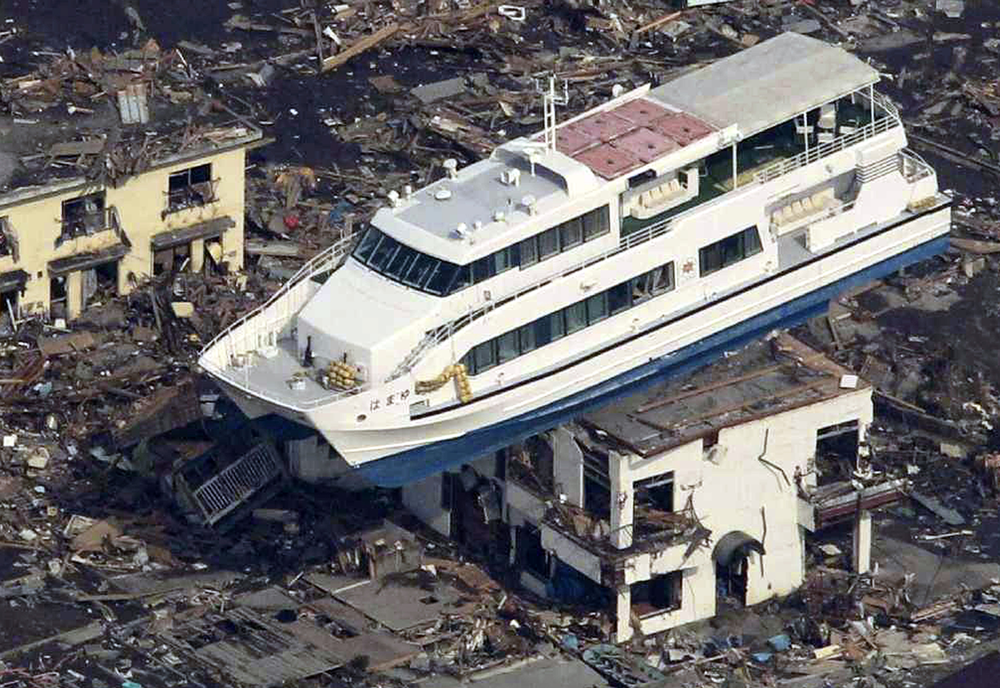
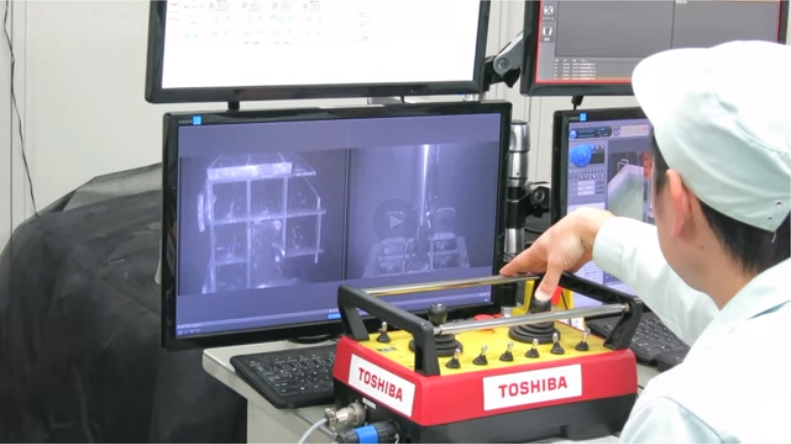
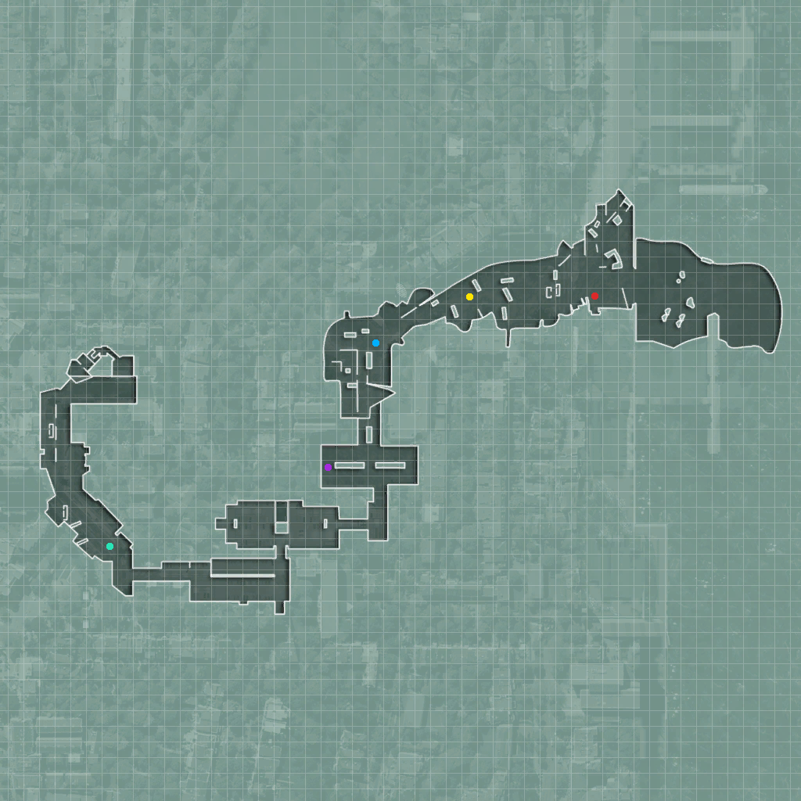
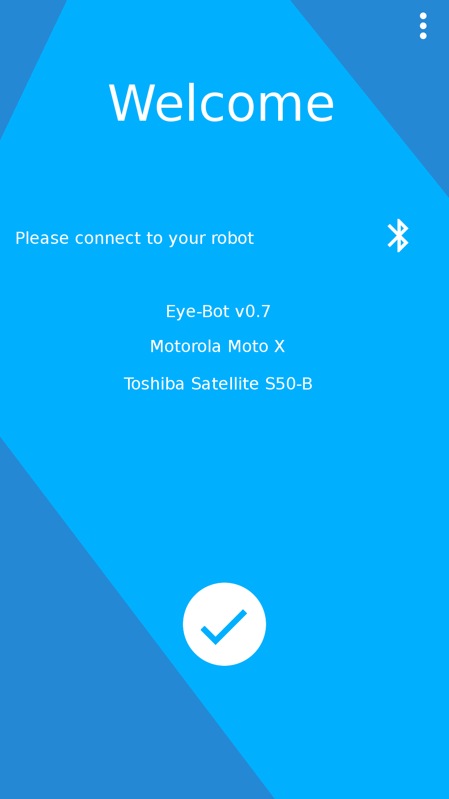

Notre démarche :
La réalisation d’un robot requiert un véritable investissement. Nous avons décidé de suivre une démarche telle qu’une entreprise aurait pu le faire, c'est-à-dire en étudiant les besoins afin de remplir un cahier des charges qui servira à la conception de notre robot. Nous avons étudié les différentes catastrophes pour lesquelles notre robot pourrait être utile. Nous avons très vite classé les différentes catastrophes en deux catégories, celles où il reste des victimes à sauvées et celles où les sauveteurs sont en danger. La première catégorie inclut des catastrophes comme par exemple, le récent séisme survenu au Népal où plus de 9 000 personnes ont perdu la vie ; ou bien l’ouragan Katrina qui a frappé la Nouvelle Orléans en Août 2005 plus de 1800 personnes sont décédées et beaucoup auraient pu été sauvées.
La seconde catégorie concerne les catastrophes qui rendent difficile l'intervention humaine, Fukushima en est un excellent exemple. Compte tenu du fort taux de radiations dans les réacteurs, il est encore aujourd’hui impossible pour l’homme de rester sur les lieux pour travailler.
Nous avons décidé de développer un robot qui sera capable d’intervenir lors de catastrophes de cette seconde catégorie. En effet, c’est lorsqu’il est impossible à l’homme de se rendre sur place que l'utilisation de robots est le plus bénéfique. Nous avons donc étudié les différents robots déjà conçus afin d’intervenir après une catastrophe. La première chose qui nous a frappée était la dépendance des robots aux commandes de l’homme.
Avec les avancées énormes dans le domaine de l'intelligence artificielle ces dernières années nous aurions pu nous attendre à une certaine autonomie des robots d’interventions. Notre seconde constatation était le manque de coopération entre ces robots. Chaque constructeur ayant développé son propre robot sans qu’aucune norme n'existe, il leur est impossible de communiquer entre eux. Ces premières recherches nous ont permis de poser les bases du projet que nous allions mener. Nous voulions créer un robot relativement autonome capable de communiquer et de coopérer avec d'éventuels coéquipiers. Nous n’allions pas créer un robot capable d’intervenir directement auprès de victimes ou de déplacer des débris, ces derniers présentant un aspect plus mécanique. Nous avons donc eu l’idée de développer un robot faisant office de plate-forme d’échange que d’autres robots pourraient rejoindre afin de créer une véritable équipe d’intervention.

Nous avons ensuite réfléchi aux différents éléments qui permettraient de rendre un robot plus autonome. Le premier élément qui nous est venue à l’esprit est la connaissance de son environnement. Un robot doit en effet connaître et analyser son environnement afin d’adapter son comportement. Nous nous sommes donc dit que si nous parvenions à mettre au point un robot capable de cartographier un environnement et de le communiquer à d’autres robots, cela permettrait, premièrement, de leur épargner cette tâche qui nécessite de nombreux capteurs, et donc de se concentrer sur un autre objectif. Deuxièmement, en centralisant les informations telles que les positions des différents robots, cela permettrait d’obtenir une vision d’ensemble et de mieux superviser une intervention.
À ce stade de notre projet nous avions déterminé notre objectif, nous allions créer un robot capable de cartographier son environnement pour ensuite le partager avec d’autres robots. N’ayant ni le temps ni le budget nécessaire pour créer plusieurs robots, nous avons décidé de faire communiquer notre robot avec un smartphone. Il nous fallait donc créer une application mobile afin de recevoir les données envoyées par le robot et utiliser celle-ci pour créer une carte.
Il nous a fallu également établir une liste de composants nécessaires à l’élaboration de notre robot. Tout d’abord une « carte mère » sur laquelle repose l’intelligence du robot. Elle doit en même temps permettre de brancher tous les composants nécessaires. Vont donc entrer en jeu, les capacités en terme de processeur, de mémoire vive, et de ports permettant la connexion des différents composants.
Nous nous sommes ensuite concentrés sur le moyen de locomotion de notre robot. La solution consistant à imiter les mouvements d’origine animale ne nous étant pas accessible, deux choix s’offraient à nous, l’utilisation de roues ou de chenilles. L’utilisation de chenilles permet une meilleure répartition du poids du robot ainsi qu’une puissance de traction accrue grâce à une surface au contact du sol plus grande, elles permettent également de franchir plus facilement un sol accidenté. Les roues ont quant à elle pour avantage d’avoir une mise en mouvement plus rapide ainsi qu’une meilleure manœuvrabilité, elles pèsent également moins lourd et ne requièrent pas de châssis spécifique. Bien que ces mécanismes présentent tous deux des avantages, nous avons décidé d’utiliser des roues, plus adaptées à l'envergure de notre projet et moins contraignantes en termes de châssis.
Une fois notre robot capable de se déplacer, il nous fallait trouver un moyen de cartographier son environnement. L’idée que nous avons eue consiste à mesurer la distance des obstacles de chaque côté du robot plusieurs fois par secondes pour obtenir un résultat relativement précis. Il suffit ensuite de placer sur la carte les obstacles à leurs positions relatives à la position instantanée du robot. Il nous fallait cependant un moyen de réaliser ces mesures. Nous avons étudié plusieurs véhicules autonomes ce qui nous a permis de repérer le LIDAR, Laser Detection and Ranging. Ce capteur permet de réaliser un relevé de mesure à l’aide d’un émetteur et d’un récepteur laser. (Schéma Lidar) Ce capteur fonctionne de la même façon que le capteur à ultrason (cf. Ultrason). Le capteur à ultrasons est l'alternative que nous avons trouvée au LIDAR qui était bien trop onéreux.
Nous avions désormais les composants nécessaires pour que notre robot puisse se déplacer et cartographier son environnement. Il nous fallait alors un moyen de communication, entre robot, ou dans notre cas entre le robot et l’application du smartphone. Le WIFI, le Bluetooth ou un simple émetteur de fréquences radios sont les trois possibilités que nous avons trouvées. Chacun de ces systèmes présentent des avantages non négligeables. Nous avons donc étudié chaque technologie afin de retenir la plus adapté à notre projet. Ces trois systèmes de communications utilisent les fréquences radios, mais ont chacun leur propre protocole de transfert de données et donc leurs caractéristiques propres. Les avantages du WIFI sont la portée du signal ainsi que son débit, cependant elle nécessite une borne fixe ainsi qu’une grande quantité d’énergie. Le Bluetooth est quant à lui très économe en énergie et permet une connexion stable entre le serveur et le client. Un autre point non négligeable est l’intégration du Bluetooth dans la totalité des smartphones. L’émetteur de fréquence radio permet de couvrir une grande partie du spectre des ondes radios, allant de 3Hz à 3GHz, Il nécessite cependant l’utilisation d’un récepteur, qui lui ne fait pas partie de l’équipement classique des téléphones mobiles.